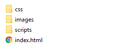

Agenda
- Introductions
- Orientation
- Web development tools
- Standards based development
- To Do
Introductions
- instructors: Jeff Parker (jeffrey_parker@bcit.ca), Michael Whyte (michael_whyte@bcit.ca)
- web site: this is it
- all about you...
- your name
- your background
- what do you hope to achieve in this course? Be specific!
Course Overview
Learn more about the course to help you determine if this is the right class for you.
Orientation: Sharefile
BCIT lab computers are re-imaged each day. Files you save on the local C: drive of a lab computer will be erased after the computer power is cycled.
Options For Saving Files:
- Use BCIT Sharefile to save your work
- Save your work to your personal USB or cloud storage account
- Use your own laptop in class, and dont use the BCIT lab computers
Orientation: Course Materials
COMP 1950 homework assignments, quizzes, in class exercises and example code can be accessed via Desire 2 Learn (D2L). Use your BCIT student number and password to access D2L. Course materials will become avilable as the course progresses. It is your responsibility to log in and download files as they become available.
If you have difficulty gaining access, consult the D2L help documentation, or contact BCIT Tech help desk at 604-412-7444 (Toll free: 1-800-351-5533).
Orientation: Web space
Each student will get a personal webspace where you will publish your homework assignments. This is not a continuation of your COMP1850 site (if you had one). This site is primarily for you to house your exercises, assignments and group work. Make it a site that is usable and functional.
- Your instructor will create webspaces for each of you.
- Email your instructor this information:
- your myBCIT email - eg: yourname123@my.BCIT.ca
- your student number - eg: A00123456
- a case sensitive password you will remember - ???
- Take the name portion of
your my.bcit.ca email
address and use it at the end of the URL described below (eg: if your
email address is 'yourname123@my.bcit.ca', your email name is
'yourname123',
so your url would be
'http://bcitcomp.ca/students/yourname123'
For example: http://bcitcomp.ca/students/your_bcit_email_name
Connect to your bcitcomp.ca account via FTP
Use Filezilla, or any FTP client to connect to bcitcomp.ca. The bcitcomp.ca server provides you with a space on the internet where you can publish your homework and assignments.
- Choose: File->SiteManager->New Site, then describe the FTP server, eg "bcitcomp.ca"
- Host: bcitcomp.ca
- Port: 21
- User: {yourBCITStudentNumber}@bcitcomp.ca (use an uppercase A when typing your BCIT student number)
- Password: ???
- Servertype: FTP File Transfer Protocol
- LogonType: Normal
- Click: Connect
- If you experience connectivity problems, re-check your input, or ask your instructor for assistance.

Tools: Visual Studio Code
There are several development tools to choose from. In COMP 1950 we will use the open source Integrated Devlopment Environment (IDE) from Microsoft called Visual Studio Code (VS Code). This is more than a simple text editor, it provides robust code editing, maintenance and testing features, as well as supporting plugins to further increase it's capabilities.
Lab Computers
VS Code should already be installed on COMP1950 lab computers. The executable is found at C:/Program Files/Microsoft VS Code/Code.exe
Laptop / Home Desktop
Download VS Code for Windows, Mac or Linux.
Exploring VS Code
Your instructor will demonstrate some of it's capabilities in class. On your own time, you may wish to review the help documentation 'Get Started' section to give yourself a better understanding of some of the basic features and functions provided by VS Code.
Tools: Browser-based development
There are three major web browser platforms to consider:
- Mozilla
- This is the platform that Firefox runs on
- Mozilla Foundation's web platform created by web developers
- Gecko rendering engine: fast and progressive
- Excellent level of standards compliance
- Corporate independence
- No built-in development tools
- Plethora of add-ons that make web development easy
- Add-ons have a downside: bloat
- WebKit
- This is the platform that gives us Chrome, Safari and Opera, with a few other smaller browsers out there as well.
- Excellent platform that is very fast and standards compliant
- Third parties can download the source, make local adjustments and release their own version, as Google and Apple have both done
- Standalone version can be downloaded at any time for the latest release
- Development is done via the built-in Developer Tools
- Initially a thin environment, recent releases have made Webkit-based browsers excellent for developers
- Macintosh based developers may need to enable web developer options in Safari before accessing the developer tools
- Microsoft
- The vendor for Edge and Internet Explorer
- Microsoft's Edge is a major improvement on it's previous browser offerings.
- Edge offers very good standards compliance and browser tools.
- Do NOT use Internet Explorer as your development browser. It is one the least standards compliant of the browsers. It is also no longer supported with updates.
Remember to test your work in as many browsers as you can! BrowserShots allows you to do basic testing for earlier versions of Chrome, Firefox, Safari, and Opera. If you need to test for early iterations of IE, try: Netrenderer
Tools: Extensions
Extensions can add more functionality and features to your development browser.
The Web Developer Toolbar is available for Chrome, Firefox and Opera. Some useful features include:
- Disable styles - by embedded/linked/inline as well as all styles, or just a single sheet
- Edit CSS & HTML - Make live changes to your CSS or HTML!
- Images - outlining, file sizes, alt information... lots more
- Form detail - useful for working with form elements
- Cookie examination and manipulation
- Built in validators
- Line Guides & Rulers
- Element inspector
Search online to see what is available for your development browser:
- Ad blockers
- Password managers
- Drawing on HTML pages
- Text to speech
- Etc, etc!
Browser Based Diagnostic Tools
As web pages get more complex, it can become difficult figuring out what is going on. For example, CSS rules that override other CSS rules, if spread across several files, can be challenge to make sense of. Having a diagnostic tool to assist in developing will make it easier to examine every detail of web pages.
Most modern browsers have some kind of development environment that can be turned on or triggered via extensions and/or plug-ins.
Web Browser Tools
Get familiar with using one of these tools. They are invaluable for understanding code and for finding, diagnosing, and fixing problems with code. You will be required to use them in the classes ahead. Practice adding/editing/removing both HTML and CSS using your development browser's built in tools.
Typical Features
- F12 key will toggle open/close the tools in most browsers
- The Elements/Inspector tab provides an overview of the HTML and CSS
- The Select tool can be used to analyze the structure of the page and understand he status of box models
- The Console will display Javascript behaviours and error messages
NOTE: changes you make with the tool are client based, and do not affect the server side HTML/CSS files. Client side changes made with this tool are temporary (they will be lost upon page refresh).
The capabilities of these browser tools go well beyond outlining, examining and editing. They provide deep troubleshooting capabilities of the HTTP network, javascript and even XHR (XMLHttpRequest).
Standards: W3C
Just as those who manufacture physical goods are expected to follow the International Organization for Standards (ISO), web developers are expected to adhere to the standards described by the World Wide Web Consortium (W3C)
W3C: World Wide Web Consortium
- Web standards have gone through the same process that the ISO went through
- Many companies see the benefits of interoperability - a few are still "forging their own"
- Many companies have standards: Adobe, Microsoft, Apple, Ford, GM
- Many are proprietary standards, and are not supported by other companies
- W3C - World Wide Web Consortium: founded by Tim Berners-Lee to try and uniformly put forward standards through a single communication vehicle
- Leading browser makers did not follow, initially
- Designers were 'taking sides' in the browser wars: users were losers
- Most modern browsers are fairly standards compliant
W3C Goals
- Universal Access: To make the Web accessible to all by promoting technologies that take into account the vast differences in culture, languages, education, ability, material resources, access devices, and physical limitations of users on all continents;
- Semantic Web: To develop a software environment that permits each user to make the best use of the resources available on the Web;
- Web of Trust: To guide the Web's development with careful consideration for the novel legal, commercial, and social issues raised by this technology.
Why web developers should follow W3C standards:
- Your pages will be viewable in the largest number of browsers
- Increase interoperability with other clients (search engines, screen readers)
- Web sites will gracefully degrade as support for CSS or other presentation layers are absent.
- Code that doesn't follow standards cannot be expected to behave predictably in the various web browsers
- Non standard code is hard to support
- Re-engineering and/or maintaining poorly coded websites can be very difficult, costly and time consuming
Discussion:
- What is the current W3C recommended version for HTML?
- What is the current W3C recommended version for CSS?
- What are the consequences of using a non-standard version?
Learn more abou the W3C and standards based devlopment from the Web Standards Project.
Standards: Web Development
Three goals of standards-driven web development:
- Compatibility (creating web pages that work well in all browsers)
- Portability (writing code that works well in any computing environment/operating system)
- Accessibility (produce web pages that are optimized for search engines, screen readers, etc)
Requirements
- HTML + CSS + DOM = Agile Web Sites
- Structurally valid HTML code (eg: tags that open are closed. parent-child tag relationships are valid, etc)
- Logically valid HTML code (eg: ids are not applied more than once per page)
- Syntactically valid CSS code
- Use external CSS to develop sites that separate content (HTML) from presentation (CSS)
- Using Semantic Markup to establish content relationships and logical deployment of content
- Use a single codebase (no browser sniffing, forked code)
- Consider special needs users with screen readers. A common browser used with screen reader software is Webbie
Standards: File and Folder Naming
HTTP urls cannot contain certain characters, and certain characters will cause unwanted effects and behaviours when used in a url. Follow best practices for all file and folder names:
- File and folder names should NOT contain:
- Capital letters
- Spaces
- Special characters: ! @ # $ % ^ & * ( ) + { } [ ] : ; " < > ? | etc...
- Acceptable non-alphanumeric characters: . _ - ~
- Filenames should either be descriptive of the file contents, or use the default page name: index.htm, index.html or index.shtml (or whatever your server default is)
- Folder names should always be descriptive. Folder structure should be logical (eg: /hockey/nhl/canucks).
Standards: File Management
- Including an index.html file in every folder on your server will ensure users cannot go snooping around your filesystem. the index.html file can be a blank HTML page if you like, as long as the user does not see a list of files when they request a folder
- Browser caching can reduce excessive request/response transactions between client and server. however, some browsers may cache things like the CSS, so if the styles have changed since caching the client may not get the latest styles.
- Ctrl + F5 (Cmd + F5 for Mac) will force a page reload. Very useful when developing on a localhost http server.
- If a file name has changed, the browser will have to make a new request from the server. versioning your file names will ensure users always have the latest version of any file (for example styles_1.0.css, styles_1.1.css, styles_1.2.css, styles_2.0.css etc)
- If there are files/pages on your server no longer being used, be sure to either remove them or locate them in a place where users are not going to accidentally find them
Standards: Code Style and Organization
In COMP1950 students are expected to present a readable, well organized code style:
- Comment all code with
your name (or nickname if you prefer). Do this for all text based files
(.html, .css, .js, .php,
etc)

- In HTML, use carriage return and tabs to
indicate parent-child tag relationships. Likewise, code your CSS to make
it easy to see which rules are applied to each selector.
- Separate different file types into
folders. At minimum, keep all non-html files in their own folder. If you
like you can make a dedicated 'html' folder for
your .html files
as well.
 - Use the .html extension for all HTML files (not .htm). Use the typical extension for all other text based files.
- Write structurally valid HTML code: W3C HTML validator
- Write syntactically valid CSS code: W3C CSS validator
- Include a referer
link on all your
HTML pages:
<a href="http://validator.w3.org/check?uri=referer">validate</a>
Semantic Markup
Highly semantic HTML content is crucial for usability, accessibilty and search engine optimization.
What is Semantic Markup?
- The practice of organizing your content into a structured hierarchy
- Using appropriate tags to explain and describe the content
- H1 ... 6 tags for summary headings
- UL tags for unsorted, unranked, related points
- OL tags for sorted, ranked, related points
- Paragraph tags instead of double BR tags
- HTML tables used for semantic value (tabular data), not for layouts
- IMPORTANT: Separate Content (HTML) from Presentation (CSS)
Building Content Relationships
- Use appropriate tags for headings, content, sub-content, lists
- This builds a relationship that descends from the title of the page
- Each section is a discrete piece of information
- Headings summarize the following content
- Citations, quotes, code samples can be contextualized by nearest heading
Logical vs. Physical Styles
- Tend to display identically in browsers, but are fundamentally different
- Physical styles define what content looks like
- Logical styles define what content is
- Logical styles are important for screen readers, physical styles are not
- Given a choice, logical styles are usually preferred
- Some physical styles:
- b - Bold
- i - Italic
- s - Strikethrough
- u - Underline
Logical Styling
- Best way to markup content for long-term usage
- Use CSS to change style (and some behaviour)
- Use DOM to change behaviour (via scripting)
- Requires thinking ahead
- Examples of logical styles:
- strong - Increase importance
- em - Add Emphasis
- code - Code sample
- kbd - Keyboard entry
- samp - Programming sample
- var - Variable
- cite - Citation
- dfn - Definition
- abbr - Abbreviation
- acronym - Acronym
- del -
Deleted text - ins - Inserted text
Key Advantages Of Semantic Content
- Content is relational - context can be determined easily
- Extracting important pieces of information is simple (CITE or CODE tags for example)
- Search engine optimization (SEO)
- Syndication
- Big win for frameworks such as jQuery
- Screen reader friendly
- Increased Accessibility
- Separating style (CSS) from structure (HTML), makes it easier to maintain
To Do
- Download, review, and complete the homework assignment from D2L
- Confirm you have access to your online webspace and that your FTP credentials are valid
- Be sure you know how to add/edit/remove HTML and CSS using a browser tool
- Install VS Code on your home computer or laptop. Explore some of the accompanying help documentation to familiarize yourself with how to code your HTML and CSS using this tool.
...and yes, there will be a practical, open book quiz at the start of session #2! (hint: practice using a browser based diagnostic tool)